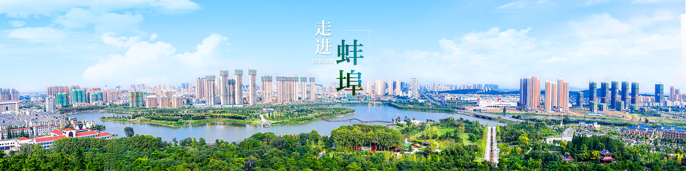

禹会诸侯地，淮上明珠城
- 全国文明城市
- 全国性综合交通枢纽城市
- 淮河流域中心城市
- 皖北地区中心城市
- 安徽省旅游中心城市
- 合肥都市圈城市
蚌埠文化简介： 蚌埠位于安徽省北部，淮河中游，古乃“采珠之地”,又称“珠城”。1911年津浦铁路开通后正式开埠，1947年正式设市，是安徽省第一个设市的城市，是皖北乃至中原地区重要的加工、商贸、科技中心。现辖怀远、固镇、五河三个县，龙子湖、蚌山、禹会、淮上四个区及国家级高新技术产业开发区和省级开发区6个。 总面积 5952平方公里，总人口360万，市区面积601.5平方公里，其中建成区面积104平方公里，市区常住人口105万人，进入“双百”城市。
蚌埠自然条件优越，滨临淮河，山水相连，四季分明，气候宜人，物产丰富。市辖三县均为全国商品粮大县，怀远石榴、五河螃蟹、固镇花生在国内均有较高知名度，蚌埠交通发达，地处京沪铁路和千里淮河的交叉点，是京沪高速铁路重要站点，蚌埠港是千里淮河第一大港，可四季通航千吨级货轮，通达江苏、上海、浙江、江西等省市。北京至福州、上海至洛阳高速在蚌埠“十字”交汇，4C级标准新机场距市区仅11公里，民航开通正在洽谈中。
蚌埠历史文化悠久，双墩考古发现了7000多年前文化遗存，4000多年前大禹治水会诸侯于境内的涂山。
蚌埠自古就是兵家必争之地，楚汉垓下之战、解放战争淮海战役等均在此上演。被周恩来同志誉为“东方芭蕾”的汉民族最具代表性的民间舞蹈—花鼓灯。 蚌埠拥有较好的工业基础和较强的加工配套能力，已经形成以加工业为主、门类较为齐全的工业体系。蚌埠科教基础雄厚、人力资源丰富，拥有中央和省属科研院所8个、国家和省级技术研发中心20个、高等院校10所、地方科研机构91个、各类中等职业教育学校34所，年输送毕业生2万多人、培养熟练技术工人2.3万人。
蚌埠市淮河穿城而过，山水相依，自然风光秀丽多姿，人文景观、名胜古迹众多，龙子湖风景区、蚌埠闸水利风景区、张公山公园、珠园、南山儿童公园、花鼓灯嘉年华等点缀其间，使人流连忘返！